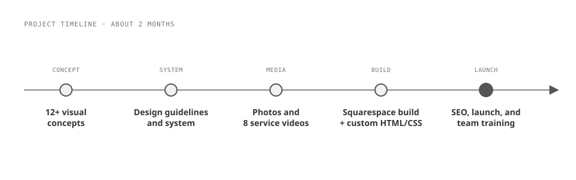

Mystique Productions books dancers, showgirls, magicians, and other entertainers for high-end corporate events, but its old website looked dated and didn't give the company the credibility its client list deserved. As the only designer and developer on the project, I explored more than 12 visual concepts with the client, built a design system, cut a custom video for every service page from a couple hundred hours of event footage, and launched the new site on Squarespace with SEO and accessibility built in and a team trained to run it themselves. In the first 6 months after launch, traffic rose more than 40% over the old site's benchmarks, and contact-form requests rose about 20%.

Mystique Productions is a Chicago entertainment company. It supplies the people who make a corporate event feel like an occasion: dancers, greeters, servers, jugglers, magicians, impersonators, and showgirls. Its clients are high-end corporate events, and it regularly provides entertainment for partners like Jewel-Osco and the Chicago White Sox.
The website didn't match that work. It looked dated, and the team felt it wasn't giving them enough credibility online. Mystique wanted the opposite: a site that, the moment someone landed on it, made them look high end and legitimate.
Nothing was broken in an emergency sense. It was just time for a face-lift, and Mystique came to SeeSaw Labs for it.
I was the only person on the project outside Mystique's own stakeholders, so I carried it from the first concept to launch and handoff over about 2 months.
The first move was going wide on visual and art direction. I explored more than 12 different concepts before we landed on the one that resonated most with Mystique's business and its clients. The hard part wasn't producing concepts; it was getting the client's ideas out of their heads. They knew the feeling they wanted, so it took a lot of workshopping, concept by concept, to find the direction that visually landed on it.
From that direction I defined design guidelines and a design system for the site, then moved into the media. Mystique had thousands of photos and a couple hundred hours of video from past events. I edited the photos in Photoshop and cut a custom video for each service page in Movavi Video Editor, eight in all, from greeters and servers to showgirls and specialty entertainment. That video work was the most time-consuming part of the project: each one went through about 3 rounds of revisions with the client before final approval.
I built the front end in Squarespace's visual editor and wrote my own HTML and CSS injections wherever the design needed more than Squarespace's default blocks could give.
That much media turned SEO from a checklist into a real opportunity. Every page had more photos and footage than it needed, which meant every image and every video was another way for the right search to find Mystique. I did the keyword research up front, then carried it through every page: page titles and meta descriptions, a clean URL structure, a heading structure that reads in order, and descriptive alt text on the images. That same alt text and heading structure did double duty for accessibility, along with color contrast and captions on video, so the site works for people using screen readers, not just for search engines.
Launch covered the details that usually get skipped: indexing the new site in Google Search Console, redirecting the old site's pages so existing links still landed somewhere, and training Mystique's team on the Squarespace editor so they could update photos, videos, and service offerings themselves.

Squarespace, extended with custom code, so the client keeps control
Built the site on Squarespace and trained Mystique's team to run it.
Considered instead: a platform that would need a developer for every update.
The client wanted full control after handoff: swapping photos, changing service offerings, updating videos. The people making those changes aren't tech-savvy, so the tool had to be approachable enough that they felt confident using it, and Squarespace gave them that confidence. The trade-off was Squarespace's default blocks, which couldn't carry the whole design on their own. Instead of leaving the platform over it, I wrote my own HTML and CSS injections to push past those defaults, so the client got the custom look and still kept the editor they could use.
A design system for a marketing site, not one-off pages
Defined design guidelines and a design system before building the pages.
Considered instead: designing each page on its own.
Mystique has a lot of different offerings and a lot of marketing channels, and unity across all of them is what makes the brand read as one strong company instead of a dozen separate acts. The system also lets Mystique scale the site by themselves: when they add a page or a service, the visual decisions are already made, which keeps the site flexible and usable for the client long after handoff.

"The new site wasn't just being found more often, it was getting more people to reach out."
In the first 6 months after launch, traffic to the site rose more than 40% over the old site's benchmarks, measured in Google Search Console.
More visitors turned into conversations, too. Requests through the site's contact form rose about 20%, which I tracked in Squarespace's own tools. That's the number closest to booked work: the new site wasn't just being found more often, it was getting more people to reach out.